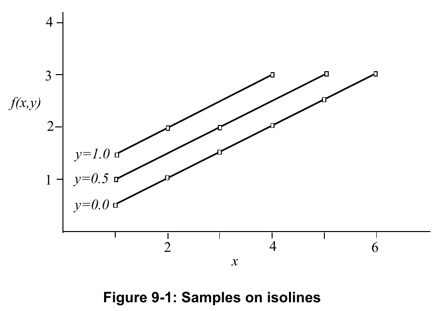
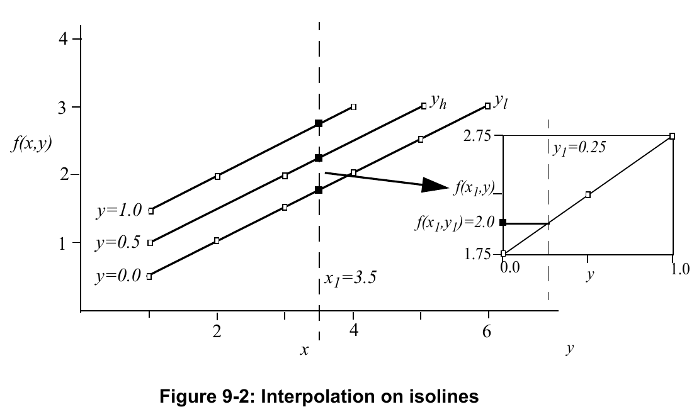
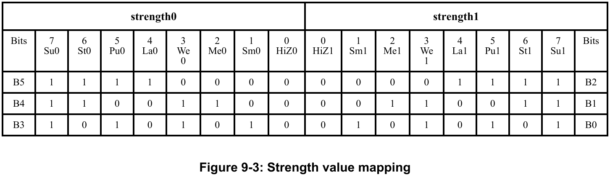
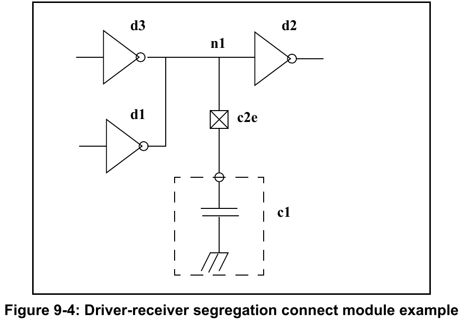

Verilog-AMS HDL is a superset of IEEE Std 1364 Verilog and hence all the system tasks in IEEE Std 1364 Verilog are supported. Verilog-AMS adds several system tasks and system functions. These are described in this clause. In addition, Verilog AMS HDL extends the behavior of several Verilog systems tasks and functions including allowing some of them to be used in an analog context.
The system task and functions support by Verilog-AMS HDL are categorized in 9.2. A subclause is devoted to each category from 9.4 until the end of this clause.
The behavior of a system task or function which is allowed in an analog context will be described in the context of the analog simulation cycle (9.3) if required in the relevant section for that system task or function.
This subclause describes system tasks and functions that are considered part of the Verilog-AMS HDL. It also states whether a particular system task or function is supported in the digital context and if it is supported in the analog context. The system tasks and functions are divided into various categories. Each category has a table describing the support level in Verilog-AMS HDL for the system task or functions in that category.
| Task name | Supported in digital context | Supported in analog context |
|---|---|---|
$display | Yes | Yes |
$displayb, $displayh, $displayo | Yes | No |
$strobe | Yes | Yes |
$strobeb, $strobeh, $strobeo | Yes | No |
$write | Yes | Yes |
$writeb, $writeh, $writeo | Yes | No |
$monitor | Yes | Yes |
$monitorb, $monitorh, $monitoro | Yes | No |
$monitoron, $monitoroff | Yes | No |
$debug | No | Yes |
| Task/function name(s) | Supported in digital context | Supported in analog context |
|---|---|---|
$fclose, $fopen | Yes | Yes |
$fdisplay | Yes | Yes |
$fdisplayb, $fdisplayh, $fdisplayo | Yes | No |
$fwrite | Yes | Yes |
$fwriteb, $fwriteh, $fwriteo | Yes | No |
$fstrobe | Yes | Yes |
$fstrobeb, $fstrobeh, $fstrobeo | Yes | No |
$fmonitor | Yes | Yes |
$fmonitorb, $fmonitorh, $fmonitoro | Yes | No |
$fgetc, $ungetc | Yes | No |
$fgets | Yes | Yes |
$fscanf | Yes | Yes |
$swrite, $sformat, $sscanf | Yes | Yes |
$swriteb, $swriteh, $swriteo | Yes | No |
$fread | Yes | No |
$rewind, $fseek, $ftell | Yes | Yes |
$fflush | Yes | Yes |
$ferror | Yes | Yes |
$feof | Yes | Yes |
$readmemb, $readmemh | Yes | No |
$sdf_annotate | Yes | No |
$fdebug | No | Yes |
| Task/function name(s) | Supported in digital context | Supported in analog context |
|---|---|---|
$printtimescale | Yes | No |
$timeformat | Yes | No |
| Task name | Supported in digital context | Supported in analog context |
|---|---|---|
$finish | Yes | Yes |
$stop | Yes | Yes |
$fatal | No | Yes |
$warning | No | Yes |
$error | No | Yes |
$info | No | Yes |
| Task name | Supported in digital context | Supported in analog context |
|---|---|---|
$async$and$array | Yes | No |
$async$nand$array | Yes | No |
$async$or$array | Yes | No |
$async$nor$array | Yes | No |
$sync$and$array | Yes | No |
$sync$nand$array | Yes | No |
$sync$or$array | Yes | No |
$sync$nor$array | Yes | No |
$async$and$plane | Yes | No |
$async$nand$plane | Yes | No |
$async$or$plane | Yes | No |
$async$nor$plane | Yes | No |
$sync$and$plane | Yes | No |
$sync$nand$plane | Yes | No |
$sync$or$plane | Yes | No |
$sync$nor$plane | Yes | No |
| Task name | Supported in digital context | Supported in analog context |
|---|---|---|
$q_initialize | Yes | No |
$q_remove | Yes | No |
$q_exam | Yes | No |
$q_add | Yes | No |
$q_full | Yes | No |
| Function name | Supported in digital context | Supported in analog context |
|---|---|---|
$realtime | Yes | No |
$time | Yes | No |
$stime | Yes | No |
$abstime | Yes | Yes |
| Function name | Supported in digital context | Supported in analog context |
|---|---|---|
$bitstoreal | Yes | Yes |
$itor | Yes | Yes |
$signed | Yes | No |
$realtobits | Yes | Yes |
$rtoi | Yes | Yes |
$unsigned | Yes | No |
| Function name | Supported in digital context | Supported in analog context |
|---|---|---|
$test$plusargs | Yes | Yes |
$value$plusargs | Yes | Yes |
| Function name | Supported in digital context | Supported in analog context |
|---|---|---|
$dist_chi_square | Yes | Yes |
$dist_exponential | Yes | Yes |
$dist_poisson | Yes | Yes |
$dist_uniform | Yes | Yes |
$dist_erlang | Yes | Yes |
$dist_normal | Yes | Yes |
$dist_t | Yes | Yes |
$random | Yes | Yes |
$arandom | Yes | Yes |
$rdist_chi_square | Yes | Yes |
$rdist_exponential | Yes | Yes |
$rdist_poisson | Yes | Yes |
$rdist_uniform | Yes | Yes |
$rdist_erlang | Yes | Yes |
$rdist_normal | Yes | Yes |
$rdist_t | Yes | Yes |
| Function name | Supported in digital context | Supported in analog context |
|---|---|---|
$clog2 | Yes | Yes |
$ln | Yes | Yes |
$ln1p | Yes | Yes |
$log10 | Yes | Yes |
$exp | Yes | Yes |
$expm1 | Yes | Yes |
$sqrt | Yes | Yes |
$pow | Yes | Yes |
$floor | Yes | Yes |
$ceil | Yes | Yes |
$sin | Yes | Yes |
$cos | Yes | Yes |
$tan | Yes | Yes |
$asin | Yes | Yes |
$acos | Yes | Yes |
$atan | Yes | Yes |
$atan2 | Yes | Yes |
$hypot | Yes | Yes |
$sinh | Yes | Yes |
$cosh | Yes | Yes |
$tanh | Yes | Yes |
$asinh | Yes | Yes |
$acosh | Yes | Yes |
$atanh | Yes | Yes |
$min | Yes | Yes |
$max | Yes | Yes |
$abs | Yes | Yes |
| Function Name | Supported in digital context | Supported in analog context |
|---|---|---|
$temperature | Yes | Yes |
$vt | Yes | Yes |
$simparam | Yes | Yes |
$simparam$str | Yes | Yes |
| Function Name | Supported in digital context | Supported in analog context |
|---|---|---|
$simprobe | No | Yes |
| Task/function name | Supported in digital context | Supported in analog context |
|---|---|---|
$discontinuity | No | Yes |
$limit | No | Yes |
$bound_step | No | Yes |
| Function name | Supported in digital context | Supported in analog context |
|---|---|---|
$mfactor | Yes | Yes |
$xposition | Yes | Yes |
$yposition | Yes | Yes |
$angle | Yes | Yes |
$hflip | Yes | Yes |
$vflip | Yes | Yes |
| Function name | Supported in digital context | Supported in analog context |
|---|---|---|
$param_given | No | Yes |
$port_connected | No | Yes |
| Function name | Supported in digital context | Supported in analog context |
|---|---|---|
$analog_node_alias | No | Yes |
$analog_port_alias | No | Yes |
| Function name | Supported in digital context | Supported in analog context |
|---|---|---|
$table_model | Yes | Yes |
| Function/operator name | Supported in digital context of connectmodule | Supported in analog context of connectmodule |
|---|---|---|
$driver_count | Yes | No |
$driver_state | Yes | No |
$driver_strength | Yes | No |
@(driver_update) | Yes | No |
$receiver_count | Yes | Yes |
| Task/function name(s) | Supported in digital context of connectmodule | Supported in analog context of connectmodule |
|---|---|---|
$driver_delay | Yes | No |
$driver_next_state | Yes | No |
$driver_next_strength | Yes | No |
$driver_type | Yes | No |
From 8.2, the analog simulation cycle has some different characteristics than the digital simulation cycle in Verilog-AMS. These differences requires some additional description for certain system tasks or functions that are supported in IEEE Std 1364 Verilog and have been extended to work in the analog context by Verilog-AMS.
A key difference is that the analog engine iteratively evaluates the analog blocks in an analog macro process until that process is converged 8.4. The behavior of a particular system task or function during the iterative evaluation process will be stated in the relevant section for that system task or function, if required. The goal of the defined behavior of a system task or function in the analog context is that a call to a such system task or function in an analog block during an iteration that is rejected should cause no side-effects on the next iteration.
Another difference is that the analog engine supports additional analyses beyond a single transient analysis. A single transient analysis is the only analysis that IEEE Std 1364 Verilog supports. Verilog-AMS extends this to allows multiple analyses, including multiple transient analyses, to be run within a single simulation process. Because of this extension, the behavior of a particular system task or function during different analysis types and between different analyses will be stated in the relevant section for that system task or function, if required.
Verilog-AMS extends the display tasks so that they can be used in the analog context.
The syntax for these functions are shown in Syntax 9-1.
display_tasks_in_analog_block ::=
$strobe ( list_of_arguments ) ;
| $display ( list_of_arguments ) ;
| $monitor ( list_of_arguments ) ;
| $write ( list_of_arguments ) ;
| $debug ( list_of_arguments ) ;
Syntax 9-1—Syntax for the display_tasks_in_analog_block
Editorial typography note: Literal task names and delimiters are bold here, preserving the terminal/nonterminal distinction shown in the colored source syntax on physical PDF page 239.
The following rules apply to these functions.
$strobe provides the ability to display simulation data when the simulator has converged on a solution for all nodes.$strobe displays its arguments in the same order they appear in the argument list. Each argument can be a quoted string, an expression which returns a value, or a null argument.\ indicates the character to follow is a literal or non-printable character (see Table 9-21).% indicates the next character shall be interpreted as a format specification which establishes the display format for a subsequent expression argument (see Table 9-22). For each % character which appears in a string, a corresponding expression argument shall be supplied after the string.%% indicates the display of the percent sign character (%) (see Table 9-21).,,) in the argument list.)$strobe is invoked without arguments, it simply prints a newline character.The $display task provides the same capabilities as $strobe. The $write task provides the same capabilities as $strobe, but with no newline. The $debug task provides the capability to display simulation data while the analog simulator is solving the equations; it displays its arguments for each iteration of the analog solver.
The $monitor task provides the ability to monitor and display the values of any variables or expressions specified as arguments to the task. The arguments for this task are specified in exactly the same manner as for the $strobe system task.
When a $monitor task is invoked with one or more arguments, the simulator sets up a mechanism whereby for each accepted step, if the variable or an expression in the argument list changes value compared with the last accepted step —with the exception of the $abstime or $realtime system functions—the entire argument list is displayed at the end of the time step as if reported by the $strobe task. If two or more arguments change value at the same time, only one display is produced that shows the new values.
The escape sequences shown in Table 9-21, when included in a string argument, print special characters.
| Escape Sequence | Description |
|---|---|
\n | The newline character |
\t | The tab character |
\\ | The \ character |
\" | The " character |
\ddd | A character specified by 1 to 3 octal digits |
%% | The % character |
Table 9-22 shows the escape sequences used for format specifications. The special character % indicates that the next character should be interpreted as a format specification that establishes the display format for a subsequent expression argument. For each % character (except %m, %% and %l) that appears in a string, a corresponding expression argument shall be supplied after the string.
| Format | Description |
|---|---|
%h or %H | Display in hexadecimal format |
%d or %D | Display in decimal format |
%o or %O | Display in octal format |
%b or %B | Display in binary format |
%c or %C | Display in ASCII character format |
%l or %L | Display library binding information |
%m or %M | Display hierarchical name |
%s or %S | Display as a string |
The formatting specification %l (or %L) is defined for displaying the library information of the specific module. This information shall be displayed as "library.cell" corresponding to the library name from which the current module instance was extracted and the cell name of the current module instance. See Clause 13 of IEEE Std 1364 Verilog for information on libraries and configuring designs.
Any expression argument which has no corresponding format specification is displayed using the default decimal format in $strobe.
The format specifications in Table 9-23 are used for real numbers and have the full formatting capabilities available in the C language. For example, the format specification %10.3g sets a minimum field width of 10 with three (3) fractional digits.
Editorial source discrepancy: The PDF itself describes %10.3g using fractional digits. C's g precision instead concerns significant digits; see the display-format audit for the primary-source cross-check and remaining interpretation boundary. The published wording above is preserved, not silently corrected.
| Format | Description |
|---|---|
%e or %E | Display ‘real’ in an exponential format |
%f or %F | Display ‘real’ in a decimal format |
%g or %G | Display ‘real’ in exponential or decimal format, whichever format results in the shorter printed output |
%r or %R | Display ‘real’ in engineering notation, using the scale factors defined in 2.6.2 |
The %m format specifier does not accept an argument. Instead, it causes the display task to print the hierarchical name of the module, task, function, or named block which invokes the system task containing the format specifier. This is useful when there are many instances of the module which call the system task. One obvious application is timing check messages in a flip-flop or latch module; the %m format specifier pinpoints the module instance responsible for generating the timing check message.
The %s format specifier is used to print ASCII codes as characters. For each %s specification which appears in a string, a corresponding argument shall follow the string in the argument list. The associated argument is interpreted as a sequence of 8-bit hexadecimal ASCII codes, with each 8 bits representing a single character. If the argument is a variable, its value shall be right-justified so the right-most bit of the value is the least-significant bit of the last character in the string. No termination character or value is required at the end of a string and leading zeros (0) are never printed.
All the display tasks, except $debug, shall not display output unless an iteration has been accepted.
For $strobe, $display, $write, and $monitor: the %r (or %R) format specifier may be used on real expressions in the digital context.
Verilog-AMS HDL extends many of the file operation tasks so that they can be used in the analog context. This section describes the file I/O tasks that can be used in the analog context.
The system tasks and functions for file-based operations are divided into the following categories:
The syntax for $fopen and $fclose system tasks is shown in Syntax 9-2.
file_open_function ::=
mcd = $fopen ( filename ) ;
| fd = $fopen ( filename , type ) ;
file_close_task ::=
$fclose ( multi_channel_descriptor ) ;
| $fclose ( fd ) ;
Syntax 9-2—Syntax for $fopen and $fclose system tasks
The function $fopen opens the file specified as the filename argument and returns either a 32-bit multichannel descriptor or a 32-bit file descriptor, determined by the absence or presence of the type argument.
filename is an expression that is a string literal, string data type, or an integral data type containing a character string that names the file to be opened.
type is a string expression containing a character string of one of the forms in Table 9-24 that indicates how the file should be opened. If type is omitted, the file is opened for writing, and a multichannel descriptor mcd is returned. If type is supplied, the file is opened as specified by the value of type, and a file descriptor fd is returned.
The multichannel descriptor mcd is a 32-bit integer in which a single bit is set indicating which file is opened. The least significant bit (bit 0) of an mcd always refers to the standard output. Output is directed to two or more files opened with multichannel descriptors by bitwise OR-ing together their multichannel descriptors and writing to the resultant value.
The most significant bit (bit 31) of a multichannel descriptor is reserved and shall always be cleared, limiting an implementation to at most 31 files opened for output via multichannel descriptors.
The file descriptor fd is a 32-bit value. The most significant bit (bit 31) of a fd is reserved and shall always be set; this allows implementations of the file input and output functions to determine how the file was opened. The remaining bits hold a small number indicating what file is opened. Three file descriptors are pre-opened; they are STDIN, STDOUT, and STDERR, which have the values 32'h8000_0000, 32'h8000_0001, and 32'h8000_0002, respectively. STDIN is pre-opened for reading, and STDOUT and STDERR are pre-opened for append.
Unlike multichannel descriptors, file descriptors cannot be combined via bitwise OR in order to direct output to multiple files. Instead, files are opened via file descriptor for input, output, and both input and output, as well as for append operations, based on the value of type, according to Table 9-24.
| Argument | Description |
|---|---|
"r" or "rb" | Open for reading |
"w" or "wb" | Truncate to zero length or create for writing |
"a" or "ab" | Append; open for writing at end of file, or create for writing |
"r+", "r+b", or "rb+" | Open for update (reading and writing) |
"w+", "w+b", or "wb+" | Truncate or create for update |
"a+", "a+b", or "ab+" | Append; open or create for update at end-of-file |
If a file cannot be opened (either the file does not exist and the type specified is "r", "rb", "r+", "r+b", or "rb+", or the permissions do not allow the file to be opened at that path), a zero is returned for the mcd or fd. Applications can call $ferror to determine the cause of the most recent error (see 9.5.7).
The "b" in the above types exists to distinguish binary files from text files. Many systems (such as Unix) make no distinction between binary and text files, and on these systems the "b" is ignored. However, some systems (such as machines running Windows NT) perform data mappings on certain binary values written to and read from files that are opened for text access.
The $fclose system task closes the file specified by fd or closes the file(s) specified by the multichannel descriptor mcd. No further output to or input from any file descriptor(s) closed by $fclose is allowed. The $fopen function shall reuse channels that have been closed.
Verilog AMS HDL supports multiple analyses during the same simulation process (see Clause 8).
If a file is opened in a write mode in the first analysis and reopened in that write mode in following analysis, then content written from the following analyses shall be appended to the content written during the previous analyses.
The file I/O system functions and tasks in both the analog and digital contexts can use file descriptors opened in either context, if the file descriptors are opened for writing or appending.
The syntax for $fdisplay, $fwrite, $fmonitor, $fstrobe and $fdebug system tasks is shown in Syntax 9-3.
file_open_function ::=
file_output_task_name ( fd [, list_of_arguments] ) ;
file_output_task_name ::=
$fdisplay | $fwrite | $fstrobe | $fmonitor | $fdebug
Syntax 9-3—Syntax for file output system tasks
file_open_function although it describes the file output tasks; this appears to be a typographical error in the published document and is reproduced here as printed.Each of the formatted display tasks — $display, $write, $monitor, and $strobe — has a counterpart that writes to specific files as opposed to the standard output. These counterpart tasks — $fdisplay, $fwrite, $fmonitor, $fstrobe, and $fdebug — accept the same type of arguments as the tasks upon which they are based, with one exception: The first argument shall be either a multichannel descriptor or a file descriptor, which indicates where to direct the file output. Multichannel descriptors are described in detail in 9.5.1. A multichannel descriptor is either a variable or the result of an expression that takes the form of a 32-bit unsigned integer value.
The $fstrobe and $fmonitor system tasks work just like their counterparts, $strobe and $monitor, except that they write to files using the file descriptor.
The syntax for the $swrite family of tasks and for $sformat system task is shown in Syntax 9-4.
string_output_task ::=
$swrite ( string_variable , list_of_arguments ) ;
variable-format_string_output_task ::=
$sformat ( string_variable , format_string , list_of_arguments ) ;
Syntax 9-4—Syntax for formatting data tasks
The $swrite family of tasks is based on the $fwrite family of tasks and accepts the same type of arguments as the tasks upon which it is based, with one exception: The first argument to $swrite shall be a string variable to which the resulting string shall be written, instead of a variable specifying the file to which to write the resulting string.
The system task $sformat is similar to the system task $swrite, with one major difference.
Unlike the display and write family of output system tasks, $sformat always interprets its second argument, and only its second argument, as a format string. This format argument can be a static string, such as "data is %d" or can be a string variable whose content is interpreted as the format string. No other arguments are interpreted as format strings. $sformat supports all the format specifiers supported by $display, as documented in Table 9-22.
The remaining arguments to $sformat are processed using any format specifiers in the format_string, until all such format specifiers are used up. If not enough arguments are supplied for the format specifiers or too many are supplied, then the application shall issue a warning and continue execution. The application, if possible, can statically determine a mismatch in format specifiers and number of arguments and issue a compile time error message.
If the format_string is a string variable, it might not be possible to determine its value at compile time.
Files opened using file descriptors can be read from only if they were opened with either the r or r+ type values. See 9.5.2 for more information about opening files.
r/r+ and its reference to 9.5.2 are reproduced from the source. Table 9-24 also describes w+/a+ as update modes (reading and writing), and opening files is covered by 9.5.1. This apparent inconsistency is not silently resolved into a new mode restriction.For example:
integer code;
code = $fgets( str, fd );reads characters from the file specified by fd into the string variable, str until a newline character is read and transferred to str, or an EOF condition is encountered.
If an error occurs reading from the file, then code is set to zero. Otherwise, the number of characters read is returned in code. Applications can call $ferror to determine the cause of the most recent error (see 9.5.7).
For example:
integer code;
code = $fscanf( fd, format, args );
code = $sscanf( str, format, args );$fscanf reads from the file specified by fd. $sscanf reads from the string str (which shall be a string variable, string parameter, or string literal).
Both functions read characters, interpret them according to a format, and store the results. Both expect as arguments a control string, format, and a set of arguments specifying where to place the results. If there are insufficient arguments for the format, the behavior is undefined. If the format is exhausted while arguments remain, the excess arguments are ignored.
If an argument is too small to hold the converted input, then, in general, the least significant bits are transferred. Arguments of any length that is supported by Verilog AMS HDL in the analog context can be used. However, if the destination is a real, then the value inf (or -inf) is transferred. The format is a string expression. The string contains conversion specifications, which direct the conversion of input into the arguments. The control string can contain the following:
$sscanf, null characters shall also be considered white space.%) that must match the next character of the input stream.%, an optional assignment suppression character *, a decimal digit string that specifies an optional numerical maximum field width, and a conversion code.A conversion specification directs the conversion of the next input field; the result is placed in the variable specified in the corresponding argument unless assignment suppression was indicated by the character *. In this case, no argument shall be supplied.
The suppression of assignment provides a way of describing an input field that is to be skipped. An input field is defined as a string of nonspace characters; it extends to the next inappropriate character or until the maximum field width, if one is specified, is exhausted. For all descriptors except the character c, white space leading an input field is ignored.
| Code | Description |
|---|---|
% | A single % is expected in the input at this point; no assignment is done |
d | Matches an optionally signed decimal number, consisting of the optional sign from the set + or -, followed by a sequence of characters from the set 0,1,2,3,4,5,6,7,8,9, and _ |
f, e, or g | Matches a floating point number. The format of a floating point number is an optional sign (either + or -), followed by a string of digits from the set 0,1,2,3,4,5,6,7,8,9 optionally containing a decimal point character (.), followed by an optional exponent part including e or E, followed by an optional sign, followed by a string of digits from the set 0,1,2,3,4,5,6,7,8,9 |
r | Matches a 'real' number in engineering notation, using the scale factors defined in 2.6.2 |
s | Matches a string, which is a sequence of nonwhite space characters |
m | Returns the current hierarchical path as a string. Does not read data from the input file or str argument |
If an invalid conversion character follows the %, the results of the operation are implementation dependent.
If EOF is encountered during input, conversion is terminated. If EOF occurs before any characters matching the current directive have been read (other than leading white space, where permitted), execution of the current directive terminates with an input failure. Otherwise, unless execution of the current directive is terminated with a matching failure, execution of the following directive (if any) is terminated with an input failure.
If conversion terminates on a conflicting input character, the offending input character is left unread in the input stream. Trailing white space (including newline characters) is left unread unless matched by a directive. The success of literal matches and suppressed assignments is not directly determinable.
The number of successfully matched and assigned input items is returned in code; this number can be 0 in the event of an early matching failure between an input character and the control string. If the input ends before the first matching failure or conversion, EOF is returned. Applications can call $ferror to determine the cause of the most recent error (see 9.5.7).
Example 1
integer pos;
pos = $ftell( fd );returns in pos the offset from the beginning of the file of the current byte of the file fd, which shall be read or written by a subsequent operation on that file descriptor.
This value can be used by subsequent $fseek calls to reposition the file to this point. Any repositioning shall cancel any $ungetc operations. If an error occurs, EOF is returned. Applications can call $ferror to determine the cause of the most recent error (see 17.2.7 of IEEE Std 1364 Verilog).
Example 2
code = $fseek( fd, offset, operation );
code = $rewind( fd );sets the position of the next input or output operation on the file specified by fd. The new position is at the signed distance offset bytes from the beginning, from the current position, or from the end of the file, according to an operation value of 0, 1, and 2 as follows:
$rewind is equivalent to $fseek (fd,0,0);
Repositioning the current file position with $fseek or $rewind shall cancel any $ungetc operations.
$fseek() allows the file position indicator to be set beyond the end of the existing data in the file. If data are later written at this point, subsequent reads of data in the gap shall return zero until data are actually written into the gap. $fseek, by itself, does not extend the size of the file.
When a file is opened for append (that is, when type is "a" or "a+"), it is impossible to overwrite information already in the file. $fseek can be used to reposition the file pointer to any position in the file, but when output is written to the file, the current file pointer is disregarded. All output is written at the end of the file and causes the file pointer to be repositioned at the end of the output.
If an error occurs repositioning the file, then code is set to -1. Otherwise, code is set to 0.
Applications can call $ferror to determine the cause of the most recent error (see 9.5.7).
For example:
$fflush( mcd );
$fflush( fd );
$fflush( );Writes any buffered output to the file(s) specified by mcd, to the file specified by fd, or if $fflush is invoked with no arguments, to all open files.
Should any error be detected by one of the file I/O routines, an error code is returned. Often this is sufficient for normal operation (i.e., if the opening of an optional configuration file fails, the application typically would simply continue using default values). However, sometimes it is useful to obtain more information about the error for correct application operation. In this case, the $ferror function can be used:
integer errno;
errno = $ferror( fd, str );A string description of type of error encountered by the most recent file I/O operation is written into str, which should be at least 640 bits wide. The integral value of the error code is returned in errno. If the most recent operation did not result in an error, then the value returned shall be zero, and the string variable str shall be empty.
For example:
integer code;
code = $feof( fd );Returns a nonzero value when EOF has previously been detected reading the input file fd. It returns zero otherwise.
If a file is being read from during an iterative solve and if that iteration is rejected, then the file pointer is reset to the file position that it pointed to before the iterative solve started.
If a file is being written to during an iterative solve, then the file write operations shall not be performed unless the iteration is accepted. The exception to this is the $fdebug. If $fdebug is evaluated during an iteration, the write operation shall occur even if the evaluation occurred during an iteration that was rejected.
The features of the underlying implementation of file I/O on the host system may prevent the file position being reset after an iteration is rejected. In this case, a fatal error will be reported.
Verilog AMS HDL does not extend the timescale tasks defined in IEEE Std 1364 Verilog.
Verilog AMS HDL extends the two simulation control tasks, $finish and $stop so that they can be run in the analog context.
This section describes their behavior if used in the analog context.
Verilog AMS HDL also supports three new simulation control tasks in the analog context only; $fatal, $error, $warning.
The syntax for this task is shown in Syntax 9-5.
finish_task ::=
$finish [ ( n ) ] ;
Syntax 9-5—Syntax for the finish_task
If $finish is called during an accepted iteration, then the simulator shall exit after the current solution is complete. $finish called during a rejected iteration shall have no effect. As a result of the simulation terminating due to a $finish task, it is expected that all appropriate final_step blocks are also triggered. If $finish is called from an analog initial block, the simulator shall exit without performing the simulation.
If an expression is supplied to this task, its value determines which diagnostic messages are printed after the $finish call is executed, as shown in Table 9-25. One (1) is the default if no argument is supplied.
| Parameter | Message |
|---|---|
| 0 | Prints nothing |
| 1 | Prints simulation time and location |
| 2 | Prints simulation time, location, and statistics about the memory and CPU time used in simulation |
If $finish is called from within an analog initial block, the simulator shall report that the call was made during initialization in place of the simulation time. If $finish is called from the analog context during a dc sweep (but outside of an analog initial block), the simulator shall report the current value of the swept variable in place of the simulation time.
The syntax for this task is shown in Syntax 9-6.
stop_task ::=
$stop [ ( n ) ] ;
Syntax 9-6—Syntax for the stop_task
A call to $stop during an accepted iteration causes simulation to be suspended at a converged time point. This task takes an optional expression argument (0, 1, or 2), which determines what type of diagnostic message is printed. The amount of diagnostic messages output increases with the value of n, as shown in Table 9-25. The $stop task shall not be used within an analog initial block.
The mechanism for resuming simulation is left to the implementation.
The syntax form for the severity system task is as follows:
assert_severity_task ::=
fatal_message_task
| nonfatal_message_task
fatal_message_task ::=
$fatal [ ( finish_number [ , message_argument { , message_argument } ] ) ] ;
nonfatal_message_task ::=
severity_task [ ( [ message_argument { , message_argument } ] ) ] ;
severity_task ::= $error | $warning | $info
finish_number ::= 0 | 1 | 2
Syntax 9-7—Assertion severity tasks
nonfatal_message_task production with unbalanced brackets: severity_task [ ( [ message_argument { , message_argument] } ] ) ] ;. The balanced form severity_task [ ( [ message_argument { , message_argument } ] ) ] ; is given above as an editorial correction.The behavior of assert severity tasks is as follows:
$fatal shall generate a run-time fatal assertion error, which terminates the simulation with an errorcode. The first argument passed to $fatal shall be consistent with the corresponding argument to the Verilog $finish system task, which sets the level of diagnostic information reported by the tool. Calling $fatal results in an implicit call to $finish.$error shall be a run-time error.$warning shall be a run-time warning, which can be suppressed in a tool-specific manner.$info shall indicate that the assertion failure carries no specific severity.Non-fatal system severity tasks ($error, $warning, $info) called during a rejected iteration shall have no effect. $fatal terminates the simulation without checking whether the iteration would be rejected.
If $fatal is executed within an analog initial block, then after outputting the message, the initialization may be aborted, and in no case shall simulation proceed past initialization. Some of the system severity task calls may not be executed either. The finish_number may be used in an implementation-specific manner.
If $error is executed within an analog initial block, then the message is issued and the initialization continues. However, the simulation shall not proceed past initialization.
The other two tasks, $warning and $info, only output their text message but do not affect the rest of the initialization and the simulation.
For simulation tools, these tasks shall also report the simulation run time at which the severity system task is called. If any of these tasks is called from an analog context during a dc sweep, the simulator shall report the current value of the swept variable in place of the simulation run time. If the task is called from an analog initial block, the simulator shall report that the call was made during initialization.
Each of these system tasks can also include additional user-specified information using the same format as the Verilog $display.
Verilog AMS HDL does not extend the PLA modeling tasks defined in IEEE Std 1364 Verilog.
Verilog AMS HDL does not extend the stochastic analysis tasks defined in IEEE Std 1364 Verilog.
Verilog AMS HDL extends the simulator time functions defined in IEEE Std 1364 Verilog as follows;
$abstime that can be used from the analog and digital contexts. $abstime returns the absolute time, that is a real value number representing time in seconds.$realtime was supported in the analog context and it had an additional argument. This version of the LRM deprecates using $realtime in the analog context.Verilog AMS HDL extends the conversion functions defined in IEEE Std 1364 Verilog so that $bitstoreal and $realtobits,$rtoi and $itor can be used in the analog context.
Verilog AMS HDL extends the command line input functions defined in IEEE Std 1364 Verilog so that they can be used in the analog context.
Verilog-AMS HDL extends the probabilistic distribution functions so that they are supported in the analog context. Also, real versions of the probabilistic distribution functions are introduced. Also, real versions of the probabilistic distribution functions are introduced as well as a special analog random system task called $arandom.
This subclause describes how the $random and $arandom system functions are supported in the analog context.
The syntax for these functions is shown in Syntax 9-8.
random_function ::=
$random [ ( random_seed ) ]
random_seed ::=
integer_variable_identifier
| reg_variable_identifier
| time_variable_identifier
analog_random_function ::=
$arandom [ ( analog_random_seed [, type_string] ) ]
analog_random_seed ::=
integer_variable_identifier
| reg_variable_identifier
| time_variable_identifier
| integer_parameter_identifier
| [ sign ] decimal_number
type_string ::=
"global"
| "instance"
Syntax 9-8—Syntax for the random_function and analog random function
Editorial source note: The PDF prints the production name as random seed although its reference uses random_seed; this transcription normalizes that name. The following paragraph restores the missing initial T in the PDF’s “he system functions”. The repeated introduction sentence above is retained from the source.
The system functions $random and $arandom provide a mechanism for generating random numbers. The random number returned is a 32-bit signed integer; it can be positive or negative. The two functions differ in the arguments they take. $arandom is upwardly compatible with $random — $arandom can take the same arguments as $random and has the same behavior.
The random_seed argument may take one of several forms. It may be omitted, in which case the simulator picks a seed. If the call to $random is within the analog context, the random_seed may be an analog integer variable. If the call to $random is within the digital context it may be a reg, integer, or time variable. If the random_seed argument is specified it is an inout argument; that is, a value is passed to the function and a different value is returned. The variable should be initialized by the user prior to calling $random and only updated by the system function. The function returns a new 32-bit random number each time it is called.
The system function $random shall always return the same stream of values given the same initial random_seed. This facilitates debugging by making the operation of the system repeatable.
$arandom supports the seed argument analog_random_seed. The analog_random_seed argument can also be a parameter or a constant, in which case the system function does not update the parameter value. However an internal seed is created which is assigned the initial value of the parameter or constant and the internal seed gets updated every time the call to $arandom is made. This allows the $arandom system function to be used for parameter initialization. In order to get different random values when the analog_random_seed argument is a parameter, the user can override the parameter using a method in 6.3.
The type_string is an additional argument that $arandom supports beyond $random. The type_string provides support for Monte-Carlo analysis and shall only by used in calls to $arandom from within a paramset. If the type_string is "global" (or not specified in a call within a paramset), then one value is generated for each Monte-Carlo trial. If the type_string is "instance" then one value is generated for each instance that references this value, and a new set of values for these instances is generated for each Monte-Carlo trial.
Examples:
Where b > 0, the expression ($random % b) gives a number in the following range: [(-b+1) : (b-1)].
The following code fragment shows an example of random number generation between -59 and 59:
integer rand;
rand = $random % 60;The section describes how the distribution functions are supported in the analog context.
The syntax for these functions are shown in Syntax 9-9.
distribution_functions ::=
$digital_dist_functions ( args )
| $rdist_uniform ( seed , start_expression , end_expression [, type_string] )
| $rdist_normal ( seed , mean_expression , standard_deviation_expression [, type_string] )
| $rdist_exponential ( seed , mean_expression [, type_string] )
| $rdist_poisson ( seed , mean_expression [, type_string] )
| $rdist_chi_square ( seed , degree_of_freedom_expression [, type_string] )
| $rdist_t ( seed , degree_of_freedom_expression [, type_string] )
| $rdist_erlang ( seed , k_stage_expression , mean_expression [, type_string] )
seed ::=
integer_variable_identifier
| integer_parameter_identifier
| [ sign ] decimal_number
type_string ::=
"global"
| "instance"
Syntax 9-9—Syntax for the probabilistic distribution functions
The following rules apply to these functions.
$random). For the $rdist_exponential, $rdist_poisson, $rdist_chi_square, $rdist_t, and $rdist_erlang functions, the arguments mean, degree_of_freedom, and k_stage shall be greater than zero (0). Otherwise an error shall be reported.$rdist_uniform returns random numbers uniformly distributed in the interval specified by its arguments.seed argument shall be an integer. If it is an integer variable, then it is an inout argument; that is, a value is passed to the function and a different value is returned. The variable is initialized by the user and only updated by the system function. This ensures the desired distribution is achieved upon successive calls to the system function. If the seed argument is a parameter or constant, then the system function does not update the parameter value. However an internal seed is created which is assigned the initial value of the parameter or constant and the internal seed gets updated every time the call to the system function is made. This allows the system function to be used for parameter initialization.seed. This facilitates debugging by making the operation of the system repeatable. In order to get different random values when the seed argument is a parameter, the user can override the parameter.$rdist_uniform, the start and end arguments are real inputs which bound the values returned. The start value shall be smaller than the end value.mean argument used by $rdist_normal, $rdist_exponential, $rdist_poisson, and $rdist_erlang is an real input which causes the average value returned by the function to approach the value specified.standard_deviation argument used by $rdist_normal is a real input, which helps determine the shape of the density function. Using larger numbers for standard_deviation spreads the returned values over a wider range. Using a mean of zero (0) and a standard_deviation of one (1), $rdist_normal generates Gaussian distribution.degree_of_freedom argument used by $rdist_chi_square and $rdist_t is a real input, which helps determine the shape of the density function. Using larger numbers for degree_of_freedom spreads the returned values over a wider range.type_string provides support for Monte-Carlo analysis and shall only be used in calls to a distribution function from within a paramset. If the type_string is "global" (or not specified in a call within a paramset), then one value is generated for each Monte-Carlo trial. If the type_string is "instance" then one value is generated for each instance that references this value, and a new set of values for these instances is generated for each Monte-Carlo trial. See 6.4.1 for an example.17.9.3 of IEEE Std 1364 Verilog contains the C-code to describe the algorithm of probabilistic system functions based on the seed value passed to them.
This code also describe the algorithm of the IEEE Std 1364 Verilog probabilistic functions extensions in Verilog-AMS HDL as indicated in Table 9-26.
| Verilog AMS Function | C function in IEEE Std 1364 Verilog (subclause 17.9.3) |
|---|---|
$rdist_uniform | uniform |
$rdist_normal | normal |
$rdist_exponential | exponential |
$rdist_poisson | poisson |
$rdist_chi_square | chi_square |
$rdist_t | t |
$rdist_erlang | erlang |
Verilog-AMS HDL extends the IEEE Std 1364-2005 Verilog HDL math functions so that they can be used from the analog context.
All of these functions, except $clog2, are aliases of the analog math operators described in 4.3.1 and Table 4-14 shows which analog math operators are aliases of which math system functions.
The system function $clog2 shall return the ceiling of the log base 2 of the argument (the log rounded up to an integer value). $clog2 is defined more completely in IEEE Std 1364-2005 Verilog HDL.
Users are encourage to use the system function version of the math operation instead of the operator for better compatibility with IEEE Std 1364-2005 Verilog HDL.
Verilog AMS HDL adds a set of system functions called the analog kernel parameter functions.
The syntax for these functions are shown in Syntax 9-10.
environment_parameter_functions ::=
$temperature
| $vt [ ( temperature_expression ) ]
| $simparam ( param_name [, expression] )
| $simparam$str ( param_name )
Syntax 9-10—Syntax for the environment parameter functions
These functions return information about the current environment parameters as a real value.
Editorial source note: The preceding general sentence is retained from the PDF; the later paragraph explicitly specifies string-valued results for $simparam$str.
$temperature does not take any input arguments and returns the circuit’s ambient temperature in Kelvin units.
$vt can optionally have temperature (in Kelvin units) as an input argument and returns the thermal voltage (kT/q) at the given temperature. $vt without the optional input temperature argument returns the thermal voltage using $temperature.
$simparam() queries the simulator for a real-valued simulation parameter named param_name. The argument param_name is a string value, either a string literal, string parameter, or a string variable. If param_name is known, its value is returned. If param_name is not known, and the optional expression is not supplied, then an error is generated. If the optional expression is supplied, its value is returned if param_name is not known and no error is generated. $simparam() shall always return a real value; simulation parameters that have integer values shall be coerced to real. There is no fixed list of simulation parameters. However, simulators shall accept the strings in Table 9-27 to access commonly-known simulation parameters, if they support the parameter. Simulators can also accept other strings to access the same parameters.
| String | Units | Description |
|---|---|---|
"gdev" | 1/Ohms | Additional conductance to be added to nonlinear branches for conductance homotopy convergence algorithm |
"gmin" | 1/Ohms | Minimum conductance placed in parallel with nonlinear branches |
"imax" | Amps | Branch current threshold above which the constitutive relation of a nonlinear branch should be linearized |
"imelt" | Amps | Branch current threshold indicating device failure |
"iteration" | Iteration number of the analog solver | |
"scale" | Scale factor for device instance geometry parameters | |
"shrink" | Optical linear shrink factor | |
"simulatorSubversion" | The simulator sub-version | |
"simulatorVersion" | The simulator version | |
"sourceScaleFactor" | Multiplicative factor for independent sources for source stepping homotopy convergence algorithm | |
"tnom" | Celsius | Default value of temperature at which model parameters were extracted |
"timeUnit" | s | Time unit as specified in `timescale, in seconds |
"timePrecision" | s | Time precision as specified in `timescale, in seconds |
The values returned by simulatorVersion and simulatorSubversion are at the vendor’s discretion, but the values shall be monotonically increasing for new versions or releases of the simulator, to facilitate checking that the simulator supports features that were added in a certain version or sub-version.
Examples:
In this first example, the variable gmin is set to the simulator’s parameter named gmin, if it exists, otherwise, an error is generated.
gmin = $simparam("gmin");In this second example, the variable sourcescale is set to the simulator’s parameter named sourceScaleFactor, if it exists, otherwise, the value 1.0 is returned.
sourcescale = $simparam("sourceScaleFactor", 1.0);$simparam$str is similar to $simparam. However it is used for returning string-valued simulation parameters. Table 9-28 gives a list of simulation string parameter names that shall be supported by $simparam$str.
| String | Description |
|---|---|
"analysis_name" | The name of the current analysis (e.g., tran1, mydc) |
"analysis_type" | The type of the current analysis (e.g., dc, tran, ac) |
"cwd" | The current working directory in which the simulator was started |
"module" | The name of the module from which $simparam$str is called |
"instance" | The hierarchical name of the instance from which $simparam$str is called |
"path" | The hierarchical path to the $simparam$str function |
Example:
module testbench;
dut dut1;
endmodule
module dut;
task mytask;
$display( "%s\n%s\n%s\n", $simparam$str( "module"),
$simparam$str( "instance"),
$simparam$str( "path"));
endtask
endmodule
// produces:
// dut
// testbench.dut1
// testbench.dut1.mytaskVerilog-AMS HDL supports a system function that allows the probing of values within a sibling instance during simulation.
dynamic_monitor_function ::=
$simprobe ( inst_name , param_name [, expression] )
Syntax 9-11—Syntax for the dynamic monitor function
$simprobe() queries the simulator for an output variable named param_name in a sibling instance called inst_name. The arguments inst_name and param_name are string values, either a string literal, string parameter, or a string variable. To resolve the value, the simulator will look for an instance called inst_name in the parent of the current instance i.e. a sibling of the instance containing the $simprobe() expression. Once the instance is resolved, it will then query that instance for an output variable called param_name. If either the inst_name or param_name cannot be resolved, and the optional expression is not supplied, then an error shall be generated. If the optional expression is supplied, its value will be returned in lieu of raising an error. The intended use of this function is to allow dynamic monitoring of instance quantities.
Example:
module monitor;
parameter string inst = "default";
parameter string quant = "default";
parameter real threshold = 0.0;
real probe;
analog begin
probe = $simprobe(inst, quant);
if (probe > threshold) begin
$strobe("ERROR: Time %e: %s#%s (%g) > threshold (%e)",
$abstime, inst, quant, probe, threshold);
$finish;
end
end
endmoduleThe module monitor will probe the quant in instance inst. If its value becomes larger than threshold, then the simulation will raise an error and stop.
module top(d, g, s);
electrical d, g, s;
inout d, g, s;
electrical gnd; ground gnd;
SPICE_pmos #(.w(4u),.l(0.1u),.ad(4p),.as(4p),.pd(10u),.ps(10u))
mp(d, g, s, s);
SPICE_nmos #(.w(2u),.l(0.1u),.ad(2p),.as(2p),.pd(6u),.ps(6u))
mn(d, g, gnd, gnd);
monitor #(.inst("mn"),.quant("id"),.threshold(4.0e-3))
amonitor();
endmoduleHere the monitor instance amonitor will keep track of the dynamic quantity id in the mosfet instance mn. If the value of id goes above the specified threshold of 4.0e-3 amps then instance amonitor will generate the error message and stop the simulation.
Verilog AMS HDL adds a set of tasks and functions to control the analog solver’s behavior on a signals and instances called the analog kernel control tasks.
The $discontinuity task is used to give hints to the simulator about the behavior of the module so the simulator can control its simulation algorithms to get accurate results in exceptional situations. This task does not directly specify the behavior of the module. $discontinuity shall be executed whenever the analog behavior changes discontinuously.
The general form is
$discontinuity [ ( constant_expression ) ] ;
where constant_expression indicates the degree of the discontinuity if the argument to $discontinuity is non-negative, i.e. $discontinuity(i) implies a discontinuity in the i’th derivative of the constitutive equation with respect to either a signal value or time where i must be a non-negative integer. Hence, $discontinuity(0) indicates a discontinuity in the equation, $discontinuity(1) indicates a discontinuity in its slope, etc. A special form of the $discontinuity task, $discontinuity(-1), is used with the $limit() function so -1 is also a valid argument of $discontinuity. See 9.17.3 for an explanation.
Because discontinuous behavior can cause convergence problems, discontinuity shall be avoided whenever possible.
Filter functions (transition(), slew(), laplace(), etc.) can smooth discontinuous behavior. However, in some cases it is not possible to implement the desired functionality using these filters. In those cases, the $discontinuity task shall be executed when the signal behavior changes abruptly. Discontinuity created by switch branches and filters, such as transition() and slew(), does not need to be announced.
The following example uses the discontinuity task to model a relay.
module relay(c1, c2, pin, nin);
inout c1, c2;
input pin, nin;
electrical c1, c2, pin, nin;
parameter real r = 1;
analog begin
@(cross(V(pin,nin))) $discontinuity;
if (V(pin,nin) >= 0)
I(c1,c2) <+ V(c1,c2) / r;
else
I(c1,c2) <+ 0;
end
endmoduleIn this example, cross() controls the time step so the time when the relay changes position is accurately resolved. It also triggers the $discontinuity task, which causes the simulator to react properly to the discontinuity. This would have been handled automatically if the type of the branch (c1,c2) had been switched between voltage and current.
Another example is a source which generates a triangular wave. In this case, neither the model nor the waveforms generated by the model are discontinuous. Rather, the waveform generated is piecewise linear with discontinuous slope. If the simulator is aware of the abrupt change in slope, it can adapt to eliminate problems resulting from the discontinuous slope (typically changing to a first order integration method).
module triangle(out);
output out;
voltage out;
parameter real period = 10.0, amplitude = 1.0;
integer slope;
real offset;
analog begin
@(timer(0, period)) begin
slope = +1;
offset = $abstime;
$discontinuity;
end
@(timer(period/2, period)) begin
slope = -1;
offset = $abstime;
$discontinuity;
end
V(out) <+ amplitude * slope *
(4 * ($abstime - offset) / period - 1);
end
endmoduleThe $bound_step() task puts a bound on the next time step. It does not specify exactly what the next time step is, but it bounds how far the next time point can be from the present time point. The task takes the maximum time step as an argument. It does not return a value.
The general form is
$bound_step ( expression ) ;
where expression is a required argument and represents the maximum timestep the simulator can advance. The expression argument shall be non-negative. If the value is less than the simulator’s minimum allowable time step, the simulator’s minimum time step shall be used instead. Refer to the simulator’s documentation for further information regarding limits on step size for time dependent analysis.
For a given time step, the simulator shall ensure that the next time step taken is no larger than the smallest $bound_step() argument currently active. The $bound_step() statement shall be ignored during a non time-domain analysis.
The example below implements a sinusoidal voltage source and uses the $bound_step() task to assure the simulator faithfully follows the output signal (it is forcing 20 points per cycle).
module vsine(out);
output out;
voltage out;
parameter real freq = 1.0, ampl = 1.0, offset = 0.0;
analog begin
V(out) <+ ampl * sin(2.0 * `M_PI * freq * $abstime) + offset;
$bound_step(0.05 / freq);
end
endmoduleThe $limit() function is a special-purpose system function whose purpose, like that of the limexp() function of 4.5.13, is to improve convergence of the analog solver. While limexp() is specifically intended for the exponential function, $limit() may be used for the exponential as well as other nonlinear functions and provides a method to recommend a specific approach for improving the convergence. Syntax 9-12 shows the methods of using the $limit() function.
limit_call ::=
$limit ( access_function_reference )
| $limit ( access_function_reference , string , arg_list )
| $limit ( access_function_reference , analog_function_identifier , arg_list )
Syntax 9-12—Syntax for $limit()
As with limexp(), the $limit() function has internal state containing information about the argument on previous iterations. It returns a real value that is derived from its first argument (the access function reference, such as a branch voltage), but it internally limits the change of the output from iteration to iteration in order to improve convergence. On any iteration where the output value is not the same as the value of the access function (within appropriate tolerances), the simulator is prevented from terminating the iteration. In all cases, the simulator is responsible for determining if limiting should be applied and what the return value is on a given iteration. In particular, the simulator may simply choose to have $limit() return the value of its first argument, if it has other methods for ensuring convergence.
When more than one argument is supplied to the $limit() function, the second argument recommends a function to use to compute the return value. When the second argument is a string, it refers to a built-in function of the simulator. The two most common such functions are pnjlim and fetlim, which are found in SPICE and many SPICE-like simulators. Simulators may support other built-in functions and need not support pnjlim or fetlim. If the string refers to an unknown or unsupported function, the simulator is responsible for determining the appropriate limiting algorithm, just as if no string had been supplied.
pnjlim is intended for limiting arguments to exponentials, and the limexp() function of 4.5.13 may be implemented through a function derived from pnjlim. Two additional arguments to the $limit() function are required when the second argument to the limit function is the string “pnjlim”: the third argument to $limit() indicates a step size vte and the fourth argument is a critical voltage vcrit. The step size vte is usually the product of the thermal voltage $vt and the emission coefficient of the junction. The critical voltage is generally obtained from the formula Vcrit = vte · ln(vte / (√2 · Is)), where Is is the saturation current of the junction.
fetlim is intended for limiting the potential across the oxide of a MOS transistor. One additional argument to the $limit() function is required when the second argument to the limit function is the string "fetlim": the third argument to $limit() is generally the threshold voltage of the MOS transistor.
In the case that none of the built-in functions of the simulator is appropriate for limiting the potential (or flow) used in a nonlinear equation, the second argument of the $limit() function may be an identifier referring to a user-defined analog function. User-defined functions are described in 4.7. In this case, if the simulator determines that limiting is needed to improve convergence, it will pass the following quantities as arguments to the user-defined function:
$limit() function on the previous iteration.$limit() function, then the third and subsequent arguments are passed as the third and subsequent arguments of the user-defined function.The arguments of the user-defined function shall all be declared input.
In order to prevent convergence when the output of the $limit() function is not sufficiently close to the value of the access function reference, the user-defined function shall call $discontinuity(-1) (see 9.17) when its return value is not sufficiently close to the value of its first argument.
The module below defines a diode and includes an analog function that mimics the behavior of pnjlim in SPICE. Though limexp() could have been used for the exponential in the current, using $limit() allows the same voltage to be used in the charge calculation.
module diode(a, c);
inout a, c;
electrical a, c;
parameter real IS = 1.0e-14;
parameter real CJO = 0.0;
analog function real spicepnjlim;
input vnew, vold, vt, vcrit;
real vnew, vold, vt, vcrit, vlimit, arg;
begin
vlimit = vnew;
if ((vnew > vcrit) && (abs(vnew - vold) > (vt + vt))) begin
if (vold > 0) begin
arg = 1 + (vnew - vold) / vt;
if (arg > 0)
vlimit = vold + vt * ln(arg);
else
vlimit = vcrit;
end else
vlimit = vt * ln(vnew / vt);
$discontinuity(-1);
end
spicepnjlim = vlimit;
end
endfunction
real vdio, idio, qdio, vcrit;
analog begin
vcrit = 0.7;
vdio = $limit(V(a,c), spicepnjlim, $vt, vcrit);
idio = IS * (exp(vdio / $vt) - 1);
I(a,c) <+ idio;
if (vdio < 0.5) begin
qdio = 0.5 * CJO * (1 - sqrt(1 - V(a,c)));
end else begin
qdio = CJO * (2.0 * (1.0 - sqrt(0.5))
+ sqrt(2.0) / 2.0 * (vdio * vdio + vdio - 3.0/4.0));
end
I(a,c) <+ ddt(qdio);
end
endmoduleVerilog AMS HDL adds system functions that can return hierarchically inherited values in a particular instance.
The syntax for these functions are shown in Syntax 9-13.
hierarchical_parameter_system_functions ::=
$mfactor
| $xposition
| $yposition
| $angle
| $hflip
| $vflip
Syntax 9-13—Syntax for the hierarchical parameter system functions
These functions return hierarchical information about the instance of a module or paramset. Subclause 6.3.6 discusses how these parameters are specified for an instance, as well as the automatic rules applied to instances with a non-unity value of $mfactor. The remaining hierarchical system parameters do not have any automatic effect on the simulation.
$mfactor is the shunt multiplicity factor of the instance, that is, the number of identical devices that should be combined in parallel and modeled.
$xposition and $yposition are the offsets, in meters, of the location of the center of the instance.
$hflip and $vflip are used to indicate that the instance has been mirrored about its center, and $angle indicates that the instance has been rotated some number of degrees in the counter-clockwise directions.
Hierarchical parameter system functions can also be used as targets in parameter alias declarations (see 3.4.7).
The value returned for each of these functions is computed by combining values from the top of the hierarchy down to the instance making the function call. The rules for combining the values are given in Table 9-29. The top-level value is the starting value at the top of the hierarchy. If a module is instantiated without specifying a value of one of these system parameters (using any of the methods in 6.3), then the value of that system parameter will be unchanged from the instantiating module. If a value is specified, then it is combined with the value from the instantiating module according to the appropriate rule from Table 9-29: the subscript “specified” indicates the value specified for the instance, and the subscript “hier” indicates the value obtained by traversing the hierarchy from the top to the instantiating module.
| System Parameter | Top-Level Value | Resolved Value for Instance | Allowed Values |
|---|---|---|---|
$angle | 0 degrees | $anglespecified + $anglehier, modulo 360 degrees | 0 ≤ $angle < 360 |
$hflip | +1 | $hflipspecified * $hfliphier | $hflip = +1 or -1 |
$mfactor | 1.0 | $mfactorspecified * $mfactorhier | $mfactor > 0 |
$vflip | +1 | $vflipspecified * $vfliphier | $vflip = +1 or -1 |
$xposition | 0.0 m | $xpositionspecified + $xpositionhier | Any |
$yposition | 0.0 m | $ypositionspecified + $ypositionhier | Any |
For example, when a module makes a call to $mfactor, the simulator computes the product of the multiplicity factor specified for the instance (or 1.0, if no override was specified) times the value for the parent module that instantiated the module, times the parent's parent's value, and so on, until the top level is reached.
$angle is specified and returned in degrees, but the trigonometric functions of 4.3.2 operate in radians.Example 1
Editorial source note: The source comments assume an inherited multiplicity of 3, but no such override appears in the displayed example. The example and its comments are retained; the missing initial setting is not silently supplied.
module test_module(p, n);
inout p, n;
electrical p, n;
module_a A1(p, n);
endmodule
module module_a(p, n);
inout p, n;
electrical p, n;
module_b #(.$mfactor(2)) B1(p, n); // mfactor = 3 * 2
endmodule
module module_b(p, n);
inout p, n;
electrical p, n;
module_c #(.$mfactor(7)) C1(p, n); // mfactor = 3 * 2 * 7 = 42
endmodule
// linear resistor
module module_c(p, n);
inout p, n;
electrical p, n;
parameter r = 1.0;
(* desc = "effective resistance" *) real reff;
analog begin
I(p,n) <+ V(p,n) / r; // mfactor scaling handled automatically
reff = r / $mfactor; // the effective resistance = 1/42
end
endmoduleshows how the effect mfactor of an instance, test_module.A1.B1.C1 of a linear resistance is determined.
Example 2
Editorial source note: The source comments assume an inherited x-position of 1.1u, but no such override appears in the displayed example. The example and its comments are retained.
module test_module(p, n);
inout p, n;
electrical p, n;
module_a A1(p, n);
endmodule
module module_a(p, n);
inout p, n;
electrical p, n;
module_b #(.$xposition(1u)) B1(p, n); // xposition = 1.1u + 1u
endmodule
module module_b(p, n);
inout p, n;
electrical p, n;
module_c #(.$xposition(2u)) C1(p, n); // xposition = 1.1u + 1u + 2u = 4.1u
endmodule
module module_c(p, n);
inout p, n;
electrical p, n;
parameter r = 1.0;
analog begin
// Expected value of xposition=4.1e-6
if ($xposition == 4.1u)
I(p,n) <+ V(p,n) / 1.0;
else
I(p,n) <+ V(p,n) / 2.0;
end
endmoduleVerilog AMS HDL adds functions that can be used to check whether a parameter or port binding was explicitly made.
The behavioral code of a module can depend on the way in which it was instantiated. The hierarchy detection functions shown in Syntax 9-14 may be used to determine information about the instantiation.
genvar_system_function ::=
$param_given ( module_parameter_identifier )
| $port_connected ( port_scalar_expression )
Syntax 9-14—Syntax for the hierarchy detection functions
Editorial source note: Bold syntax terminals preserve the PDF’s red literal-function names and parentheses (physical page 264). The example below normalizes the source’s curly macro introducer to an ASCII backtick, and the following prose uses an ASCII apostrophe in clk2's. These punctuation normalizations do not add language rules.
Note that the return values of these functions shall be constant during a simulation; the value is fixed during elaboration. As such, these functions can be used in genvar expressions controlling conditional or looping behavior of the analog operators of 4.5.
The $param_given() function can be used to determine whether a parameter value was obtained from the default value in its declaration statement or if that value was overridden. The $param_given() function takes a single argument, which must be a parameter identifier. The return value shall be one (1) if the parameter was overridden, either by a defparam statement or by a module instance parameter value assignment, and zero (0) otherwise.
The following example sets the variable temp to represent the device temperature. Note that $temperature is not a constant_expression, so it cannot be used as the default value of the parameter tdevice. It is important to be able to distinguish the case where tdevice has its default value (say, 27) from the declaration statement from the case where the value 27 was in fact specified as an override, if the simulation is performed at a different temperature.
if ($param_given(tdevice))
temp = tdevice + `P_CELSIUS0;
else
temp = $temperature;Module ports need not be connected when the module is instantiated. The $port_connected() function can be used to determine whether a connection was specified for a port. The $port_connected() function takes one argument, which must be a port identifier. The return value shall be one (1) if the port was connected to a net (by order or by name) when the module was instantiated, and zero (0) otherwise. Note that the port may be connected to a net that has no other connections, but $port_connected() shall still return one.
In the following example, $port_connected() is used to skip the transition filter for unconnected nodes. In module twoclk, the instances of myclk only have connections for their vout_q ports, and thus the filter for vout_qbar is not implemented for either instance. In module top, the vout_q2 port is not connected, so that the vout_q port of topclk1.clk2 is not ultimately used in the circuit; however, the filter for vout_q of clk2 is implemented, because it vout_q is connected on clk2's instantiation line.
module myclk(vout_q, vout_qbar);
output vout_q, vout_qbar;
electrical vout_q, vout_qbar;
parameter real tdel = 3u from [0:inf);
parameter real trise = 1u from (0:inf);
parameter real tfall = 1u from (0:inf);
parameter real period = 20u from (0:inf);
integer q;
analog begin
@(timer(0, period))
q = 0;
@(timer(period/2, period))
q = 1;
if ($port_connected(vout_q))
V(vout_q) <+ transition(q, tdel, trise, tfall);
else
V(vout_q) <+ 0.0;
if ($port_connected(vout_qbar))
V(vout_qbar) <+ transition(!q, tdel, trise, tfall);
else
V(vout_qbar) <+ 0.0;
end
endmodule
module twoclk(vout_q1, vout_q2);
output vout_q1, vout_q2;
electrical vout_q1, vout_q1b;
myclk clk1(.vout_q(vout_q1));
myclk clk2(.vout_q(vout_q2));
endmodule
module top(clk_out);
output clk_out;
electrical clk_out;
twoclk topclk1(.vout_q1(clk_out));
endmoduleVerilog-AMS HDL adds system functions that allows a local node to be aliased to a hierarchical node via a string reference. The node alias system functions are shown in Syntax 9-15.
analog_node_alias_system_function ::=
$analog_node_alias ( analog_net_reference , hierarchical_reference_string )
| $analog_port_alias ( analog_net_reference , hierarchical_reference_string )
Syntax 9-15—Syntax for the analog node alias system functions
Both system functions take two arguments. The analog_net_reference shall be either a scalar or vector continuous node declared in the module containing the system function call. If the analog_net_reference is a vector node, it shall reference the full vector node, it shall be an error for it to be a bit select or part select of a vector node. It shall be an error for the analog_net_reference to be a port or to be involved in port connections.
The hierarchical_reference_string shall be a constant string value (string literal or string parameter) containing a hierarchical reference to a continuous node. It shall be an error for the hierarchical_reference_string to reference a node that is used as an analog_net_reference in another $analog_node_alias() or $analog_port_alias() system function call. The hierarchical_reference_string shall follow the resolution rules for hierarchical references as described in 6.7.
It shall be an error for the $analog_node_alias() and $analog_port_alias() system functions to be used outside the analog initial block. Along with their enclosing analog initial block scopes, both system functions shall be re-evaluated each sweep point of a dc sweep as needed (see 5.2.1 and 8.2 for details).
The $analog_node_alias() and $analog_port_alias() system functions shall not be used inside conditional (if, case, or ?:) statements unless the conditional expression controlling the statement consists of terms which can not change during the course of a simulation.
The return value for both system functions shall be one (1) if the hierarchical_reference_string points to a valid continuous node and zero (0) otherwise. If the hierarchical_reference_string references a valid continuous node, then the analog_net_reference will be aliased to that hierarchical node and shall refer to the same circuit matrix position.
If the return value is zero (0), then the node referenced by the analog_net_reference shall be treated as a normal continuous node declared in the module containing the system function call. As such, the user is encouraged to check the return value from the system function call and to take necessary steps to avoid runtime topology issues like a singular matrix.
In addition, a node that is aliased to a valid hierarchical port reference via the $analog_port_alias() function shall be allowed as an input to the port access function (see 5.4.3) and shall measure the flow through the port of the instance referred to by the hierarchical reference.
If a particular node is involved in multiple calls to either system function, then the last evaluated call shall take precedence.
The following rules shall be applied to determine whether the node or port referenced by the hierarchical_reference_string is considered valid. If any of these rules are violated then the system function shall return a value of zero (0).
hierarchical_reference_string shall refer to a scalar continuous node or a scalar element of a continuous vector nodeanalog_net_reference and the resolved hierarchical node reference shall be compatible (see 3.11)$analog_port_alias() system function, the resolved hierarchical node reference shall be a portAn example showing the use of these two system functions is as follows:
module top;
electrical a, b, c, gnd;
ground gnd;
resistor #(.r(1k)) r1(.p(a), .n(gnd));
checker #(.n1_str("top.a")) ch1();
analog V(a,gnd) <+ 5;
endmodule
module checker;
electrical n1, n2;
parameter string n1_str = "(not_given)";
integer status;
real iprobe, vprobe;
analog initial begin
// node n1 will be aliased to top.gnd
status = $analog_node_alias(n1, "top.gnd");
// Invalid alias as top.a is not a port. Node n2 at this stage
// is still just a local node in ch1(). The integer status will
// be assigned a value of 0.
status = $analog_port_alias(n2, "$root.top.a");
// even though n1 was assigned a valid alias to top.gnd, this
// one to top.a will take precedence.
status = $analog_node_alias(n1, n1_str);
// Here n2 is now successfully aliased to the port p in instance r1.
status = $analog_port_alias(n2, "top.r1.p");
end
analog begin
// since n2 is aliased to the port p of instance top.r1
// we are allowed to probe the port current. In this case,
// the probe will return a value of 5mA.
iprobe = I(<n2>);
// since n1 is aliased to the node top.a, we will be
// probing the potential of that node. In this case,
// the probe will return a value of 5V.
vprobe = V(n1);
end
endmoduleVerilog-AMS HDL provides a multidimensional interpolation and lookup function called $table_model. The function is designed to operate specifically on multidimensional data in a form that is commonly generated via parametric sweeping schemes available in most analog simulators. This type of data is generated when simulating a system while varying (sweeping) a parameter across some range. Data dimensionality increases when parameter sweeps are nested. While the samples are those of a multidimensional function, sample generation via parametric sweeping leads to a simple recursive interpolation and extrapolation process defined by the $table_model function.
A typical example will help to explain the process. A user may wish to create a data based model of some function f(x,y) over some range of x and y and use that data as the basis of a behavioral model described in Verilog-AMS.

We can say that f(x,y) is sampled on a set of isolines. An isoline for each value of y is generated when y is held constant and x is varied across a desired range. Each isoline may exist over a different range of x values and the number and spacing of samples may be different on each isoline.
When describing the sampled set, x and y are called independent variables and f(x,y) is called the dependent variable. The sampling scheme also introduces the concept of an innermost and outermost dimension. In this example, x is the fastest changing or innermost dimension associated with the sampled function f(x,y) and y is the slowest changing or outermost dimension.
Understanding that the underlying multidimensional function is sampled on a set of isolines, we can now describe a simple recursive process to interpolate, extrapolate, or perform lookup on this sampled function.

Using the above example let us assume the user requests a value for the lookup pair (x1,y1). We first look through the set of isolines in y and find the pair that bracket y1. Now for each isoline in y we find the two points that bracket x1 and interpolate each isoline to find f(x1,yh) and f(x1,yl). Having thus generated an isoline in y for the point x1 in x, we may interpolate this isoline to find the value f(x1,y1). If the lookup point falls off the end of any given isoline then we extrapolate its value on that isoline.
As a consequence of this algorithm, the interpolation and extrapolation schemes always operate in a single dimension analogous to how the data was originally generated, so the interpolation and extrapolation schemes used may be specified on a per dimension basis.
The minimum data requirement is to have the product of at least two points per dimension (2N for N dimensions). In addition, the result of the bracketing to produce intermediate points (as per Figure 9-2 and description above) must also produce at least two points per subsequent lower dimension. Within the data set, each point shall be distinct in terms of its independent variable values. If there are two or more data points with the same independent and dependent values, then the duplicates shall be ignored and the tool may generate a warning. If there are two or more data points with the same independent values but different dependent values then an error is generated.
The $table_model function defines a format to represent the isolines of multidimensional data and a set of interpolation schemes that we need only define for single dimensional data. The data may be stored in a file or as a sequence of one-dimension arrays or a single two-dimensional array.
The interpolation schemes are closest point (discrete) lookup, linear, quadratic splines, and cubic splines. Extrapolation may be specified as being constant, linear, or error (meaning if extrapolation occurs the system should error out).
The lookup variables, (x1, y1) in the example above (table_inputs in Syntax 9-16) may be any legal expression that can be assigned to an analog signal.
The syntax for the $table_model function is shown in Syntax 9-16.
table_model_function ::=
$table_model ( table_inputs , table_data_source [, table_control_string] )
table_inputs ::=
expression [, 2nd_dim_expression [, nth_dim_expression]]
table_data_source ::=
file_name | table_model_array
file_name ::=
string_literal | string_parameter
table_model_array ::=
1st_dim_array_identifier [, 2nd_dim_array_identifier [, nth_dim_array_identifier]],
output_array_identifier
table_control_string ::=
"[interp_control[;dependent_selector]]"
interp_control ::=
1st_dim_table_ctrl_substr_or_null [, 2nd_dim_table_ctrl_substr_or_null
[, nth_dim_table_ctrl_substr_or_null]]
dependent_selector ::=
integer
table_ctrl_substr ::=
[table_interp_char][table_extrap_char [higher_table_extrap_char]]
table_interp_char ::=
I | D | 1 | 2 | 3
table_extrap_char ::=
C | L | E
Syntax 9-16—Syntax for table model function
Editorial source note: The PDF’s table_control_string and interp_control production labels omit spacing before ::=; spacing is normalized here. The minimum-data paragraph above prints “2N”, not a superscript exponent; its accompanying product-of-points requirement is retained without silently correcting that notation.
table_data_source specifies the data source, samples of a multidimensional function arranged on isolines. The data is specified as columns in a text file or as a set of arrays (hence the name table model). In either case the layout is conceptually the same.
A table of M dependent variables of dimension N are laid out in N+M columns in the file, with the independent variables appearing in the first N columns followed by the dependent variables in the remaining M columns. The independent variables are ordered from the outermost (slowest changing) variable to the innermost (fastest changing) variable. Though an isoline ordinate does not change for a given isoline, in this scheme the ordinate is repeated for each point of that isoline (thus keeping the input data as a set of data rows all with the same number of points). The result is a sequential listing of each isoline with the total number of points in the listing being equal to the total number of samples on all isolines.
Again, the above example described via samples will help illustrate the layout. The function being described is
f(x,y)=0.5x + y
f(x,y) is the only dependent variable we consider in this case, and there are three isolines for values of y 0.0, 0.5 and 1.0; x is sampled at various points on each of the three isolines.
# 2-D table model sample example
#
# y x f(x,y)
#y=0 isoline
0.0 1.0 0.5
0.0 2.0 1.0
0.0 3.0 1.5
0.0 4.0 2.0
0.0 5.0 2.5
0.0 6.0 3.0
#y=0.5 isoline
0.5 1.0 1.0
0.5 3.0 2.0
0.5 5.0 3.0
#y=1.0 isoline
1.0 1.0 1.5
1.0 2.0 2.0
1.0 4.0 3.0As can be seen here, the slowly changing outer independent variable appears to the left while the rapidly changing inner independent variable appears to the right; isoline ordinates are repeated for each sample on a given isoline.
Each sample point is separated by a newline and each column is separated by one or more spaces or tabs. Comments begin with # and continue to the end of that line. They may appear anywhere in the file. Blank lines are ignored. The numbers shall be real or integer.
When the data source is a sequence of 1-D arrays the isolines are laid out in conceptually the same way with each array being just as a column in the file format described above. Arrays may be specified directly via the concatenation operator or via array variable names.
The state of the data source is captured on the first call to the table model function. Any change after this point is ignored.
While it is suggested that the user arrange the sampled isolines in sorted order (one isoline following another in all dimensions); if the user provides the data in random order the system will sort the data into isolines in each dimension. Whether the data is sorted or not, the system determines the isoline ordinate by reading its exact value from the file or array. Any noise on the isoline ordinate may cause the system to incorrectly generate multiple isolines where the user intended a single isoline.
The input example above illustrated the isoline format for a single two-dimensional function (or dependent variable). The file may contain multiple dependent variables, all sharing the same set of isoline samples. A column in the data source may also be marked as ignore. These and all interpolation control settings are provided via the interpolation control string.
The control string is used to specify how the $table_model function should interpolate or lookup the data in each dimension and how it should extrapolate at the boundaries of each dimension. It also provides for some control on how to treat columns of the input data source. The string consists of a set of comma separated sub-strings followed by a semicolon and the dependent selector. The first group of sub-strings provide control over each independent variable with the first sub-string applying to the outermost dimension and so on. The dependent variable selector is a column number allowing us to specify which dependent variable in the data source we wish to interpolate. This number runs 1 though M with M being the total number of dependent variables specified in the data source.
Each sub-string associated with interpolation control has at most 3 characters. The first character controls interpolation and obeys Table 9-30.
| Character | Description |
|---|---|
I | Ignore this input column |
D | Closest point (discrete) lookup |
1 | Linear interpolation (default) |
2 | Quadratic spline interpolation |
3 | Cubic spline interpolation |
The remaining character(s) in the sub-string specify the extrapolation behavior.
| Character | Description |
|---|---|
C | Constant extrapolation |
L | Linear extrapolation (default) |
E | Error on an extrapolation request |
The constant extrapolation method returns the table endpoint value. Linear extrapolation extends linearly to the requested point from the endpoint using a slope consistent with the selected interpolation method. The user may also disable extrapolation by choosing the error extrapolation method. With this method, an extrapolation error is reported if the $table_model function is requested to evaluate a point beyond the interpolation region.
For each dimension, users may use up to 2 extrapolation method characters to specify the extrapolation method used for each end. When no extrapolation method character is given, the linear extrapolation method will be used for both ends as default. Error extrapolation results in a fatal error being raised. When one extrapolation method character is given, the specified extrapolation method will be used for both ends. When two extrapolation method characters are given, the first character specifies the extrapolation method used for the end with the lower coordinate value, and the second character is used for the end with the higher coordinate value.
| Control String | Description |
|---|---|
"" or control string omitted | Null string, default linear interpolation and extrapolation. Dimensionality of the data is assumed to be N. Column N+1 is taken as the dependent. |
"1L,1L" | Data is 2-D, linear interpolation and extrapolation in both dimensions. |
"1LL,1LL" | Same as above, extrapolation method specified for both ends in each dimension. |
"1LL,1LL;1" | Same as above, dependent variable 1 is specified. This is the default behavior when there are multiple dependent variables in the file and there is no dependent variable selector specified in the control string |
"D,1,3" | Closest point lookup in the outer dimension, linear interpolation on dimension two and cubic spline interpolation on the inner dimension. |
"I,1CC,1CC;3" | Ignore column 1, linear interpolation and constant extrapolation in all dimensions, interpolation applies to dependent variable 3. There are at least 6 column in the data file. |
"3,D,I,1;3" | Cubic spline interpolation in dimension 3, (column 1), closest lookup in dimension 2 (column 2), ignore column 3, and use linear interpolation on the innermost dimension (dimension 1, column 4). Interpolate dependent variable 3 (column 7). This file has at least 7 columns. |
"C,,3" | Data is 3D, equivalent to “1CC, 1LL, 3LL”. |
The closest point lookup algorithm returns the closest point in the specified dimension. When the lookup ordinate is equidistant from two bracketing samples the function snaps away from zero.
The linear interpolation algorithm provides a simple linear interpolation between the closest sample points on a given isoline. Cubic spline interpolation1 generates a spline for each isoline being interpolated. The extrapolation option specified is taken into account when generating the spline coefficients so as to avoid end point discontinuities in the first order derivative of the interpolated function.
When formulating the cubic spline equations the desired derivative of the interpolation function at both end points must be specified in order to provide the complete set of constraints for the cubic spline equations. It is convenient then that the table model function specifies end point extrapolation behavior. If the user selects linear extrapolation this leads to a natural spline. If constant extrapolation is specified the end point derivative is set to zero thus avoiding a discontinuity in the first order derivative at that end point.
Quadratic splines are similar to cubic splines, offering more efficient evaluation with generally less favorable interpolation results. Again one should attempt to avoid end point discontinuities, though it is not always possible in this case.
As a general rule cubic splines are best applied to smoothly varying samples (such as the DC I-V characteristic of a diode) while linear interpolation is a better option for data with abrupt transitions (such as a transient pulsed waveform).
1Numerical Methods in Scientific Computing, Germund Dahlquist and Åke Björck.
A simple call to the $table_model function is illustrated using the two dimensional sample set given in the above plots and tables. Let's first assume this data is stored in a file called sample.dat. The data is two dimensional with a single dependent variable. The independent variables were named x and y above. y is the outermost independent variable in the sample set while x is the innermost independent variable.
module example_tb(a, b);
electrical a, b;
inout a, b;
analog begin
I(a, b) <+ $table_model(0.0, V(a,b), "sample.dat");
end
endmoduleThis instance specifies zero for y and uses a module potential to interpolate x. No control string is specified and so the function defaults to performing linear interpolation and linear extrapolation in both dimensions.
It is possible to specify how to perform the interpolation via the control string:
I(a, b) <+ $table_model(0.0, V(a,b), "sample.dat", "1LL,3LL");Linear interpolation and extrapolation are specified in y and cubic interpolation with linear extrapolation in x.
The data source may also be specified as an array.
module example_tb(a, b);
electrical a, b;
inout a, b;
real y[0:11], x[0:11], f_xy[0:11];
analog begin
@(initial_step) begin
// y=0.0 isoline
y[0] =0.0; x[0] =1.0; f_xy[0] =0.5;
y[1] =0.0; x[1] =2.0; f_xy[1] =1.0;
y[2] =0.0; x[2] =3.0; f_xy[2] =1.5;
y[3] =0.0; x[3] =4.0; f_xy[3] =2.0;
y[4] =0.0; x[4] =5.0; f_xy[4] =2.5;
y[5] =0.0; x[5] =6.0; f_xy[5] =3.0;
// y=0.5 isoline
y[6] =0.5; x[6] =1.0; f_xy[6] =1.0;
y[7] =0.5; x[7] =3.0; f_xy[7] =2.0;
y[8] =0.5; x[8] =5.0; f_xy[8] =3.0;
// y=1.0 isoline
y[9] =1.0; x[9] =1.0; f_xy[9] =1.5;
y[10]=1.0; x[10]=2.0; f_xy[10]=2.0;
y[11]=1.0; x[11]=4.0; f_xy[11]=3.0;
end
I(a, b) <+ $table_model(0, V(a,b), y, x, f_xy);
end
endmoduleHere the array is specified via array variables. The variables are initialized inside an initial_step block ensuring that they do not change after the first call to $table_model. Arrays may also be specified directly via an array assignment pattern.
Verilog-AMS HDL extends IEEE Std 1364-2005 Verilog HDL with a set of driver access functions. Verilog-AMS HDL also adds a new operator, driver_update that is used in combination with the driver access functions which is described here for that reason.
Access to individual drivers and net resolution is necessary for accurate implementation of connect modules (see 7.5). A driver of a signal is a process which assigns a value to the signal, or a connection of the signal to an output port of a module instance or simulation primitive.
The driver access functions described here only access drivers found in ordinary modules and not to those found in connect modules. Driver access functions can only be called from connect modules.
A signal can have any number of drivers; for each driver the current status, value, and strength can be accessed.
$driver_count returns an integer representing the number of drivers associated with the signal in question. The syntax is shown in Syntax 9-17.
driver_count_function ::=
$driver_count ( signal_name )
Syntax 9-17—Syntax for $driver_count
The drivers are arbitrarily numbered from 0 to N-1, where N is the total number of ordinary drivers contributing to the signal value. For example, if this function returns a value 5 then the signal has five drivers numbered from 0 to 4.
$receiver_count returns an integer representing the number of receivers associated with the signal in question. The syntax is shown in Syntax 9-18.
receiver_count_function ::=
$receiver_count ( signal_name )
Syntax 9-18—Syntax for $receiver_count
The receivers are arbitrarily numbered from 0 to N-1, where N is the total number of ordinary receivers being contributed by the signal value. For example, if this function returns a value 5 then the signal has five receivers numbered from 0 to 4.
driver_state returns the current value contribution of a specific driver to the state of the signal. The syntax is shown in Syntax 9-19.
driver_state_function ::=
$driver_state ( signal_name , driver_index )
Syntax 9-19—Syntax for $driver_state
driver_index is an integer value between 0 and N-1, where N is the total number of drivers contributing to the signal value. The state value is returned as 0, 1, x, or z.
driver_strength returns the current strength contribution of a specific driver to the strength of the signal. The syntax is shown in Syntax 9-20.
driver_strength_function ::=
$driver_strength ( signal_name , driver_index )
Syntax 9-20—Syntax for $driver_strength
driver_index is an integer value between 0 and N-1, where N is the total number of drivers contributing to the signal value. The strength value is returned as two strengths, bits 5-3 for strength0 and bits 2-0 for strength1 (see IEEE Std 1364-2005 Verilog HDL, subclauses 7.10 and 7.11).
If the value returned is 0 or 1, strength0 returns the high-end of the strength range and strength1 returns the low-end of the strength range. Otherwise, the strengths of both strength0 and strength1 is defined as shown in Figure 9-3 below.

| strength0 | strength1 | ||||||||||||||||
|---|---|---|---|---|---|---|---|---|---|---|---|---|---|---|---|---|---|
| Bits | 7 Su0 | 6 St0 | 5 Pu0 | 4 La0 | 3 We0 | 2 Me0 | 1 Sm0 | 0 HiZ0 | 0 HiZ1 | 1 Sm1 | 2 Me1 | 3 We1 | 4 La1 | 5 Pu1 | 6 St1 | 7 Su1 | Bits |
| B5 | 1 | 1 | 1 | 1 | 0 | 0 | 0 | 0 | 0 | 0 | 0 | 0 | 1 | 1 | 1 | 1 | B2 |
| B4 | 1 | 1 | 0 | 0 | 1 | 1 | 0 | 0 | 0 | 0 | 1 | 1 | 0 | 0 | 1 | 1 | B1 |
| B3 | 1 | 0 | 1 | 0 | 1 | 0 | 1 | 0 | 0 | 1 | 0 | 1 | 0 | 1 | 0 | 1 | B0 |
The status of drivers for a given signal can be monitored with the event detection keyword driver_update. It can be used in conjunction with the event detection operator @ to detect updates to any of the drivers of the signal.
always @(driver_update clock)
statement;causes the statement to execute any time a driver of the signal clock is updated. Here, an update is defined as the addition of a new pending value to the driver. This is true whether or not there is a change in the resolved value of the signal.
As a result of driver receiver segregation, the drivers and receivers are separated so that any analog connected to a mixed net has the opportunity to influence the value driving the digital receivers. Since a single digital port is used in the connect module, the user must specify the value that the receivers will see. By not specifying the receiver value directly in the connect module driver, receiver segregation will be ignored, which is the default case. This assignment of the receiver value is done via the assign statement in which the digital port will be used to read the driver values as well as to set the receiver value.
assign d_receivers = d_drivers;reg out; // value of out determined in CM, see example in 9.22.7
assign d = out;Using the example shown in Figure 9-4, a connect module can be created using driver access functions to accurately model the effects of multiple drivers on an interface.

The connect module below takes advantage of much of the mixed-signal language including driver access functions. This module effectively adds another parallel resistor from output to ground whenever a digital output connected to the net goes high, and another parallel resistor from output to rail (supply) whenever a digital output connected to the net goes low. If this is used as the connect module in Figure 9-4, not only is the delay from digital outputs to the digital input a function of the value of the capacitor, for a given capacitance it takes approximately half the time (since two gates are driving the signal rather than one).
connectmodule c2e(d,a);
input d;
output a;
ddiscrete d;
electrical a, rail, gnd;
reg out;
ground gnd;
branch (rail,a)pull_up;
branch (a,gnd)pull_down;
branch (rail,gnd)power;
parameter real impedance0 = 120.0;
parameter real impedance1 = 100.0;
parameter real impedanceOff = 1e6;
parameter real vt_hi = 3.5;
parameter real vt_lo = 1.5;
parameter real supply = 5.0;
integer i, num_ones, num_zeros;
assign d=out;
initial begin
num_ones = 0;
num_zeros = 0;
end
always @(driver_update(d)) begin
num_ones = 0;
num_zeros = 0;
for ( i = 0; i < $driver_count(d); i=i+1)
if ( $driver_state(d,i) == 1 )
num_ones = num_ones + 1;
else
num_zeros = num_zeros + 1;
end
always @(cross(V(a) - vt_hi, -1) or cross(V(a) - vt_lo, +1))
out = 1'bx;
always @(cross(V(a) - vt_hi, +1))
out = 1'b1;
always @(cross(V(a) - vt_lo, -1))
out = 1'b0;
analog begin
// Approximately one impedance1 resistor to rail per high output
// connected to the digital net
V(pull_up) <+ 1/((1/impedance1)*num_ones+(1/impedanceOff)) *
I(pull_up);
// Approximately one impedance0 resistor to ground per low output
// connected to the digital net
V(pull_down) <+ 1/((1/impedance0)*num_zeros+(1/impedanceOff)) *
I(pull_down);
V(power) <+ supply;
end
endmoduleVerilog-AMS HDL extends IEEE Std 1364-2005 Verilog HDL so that a set of supplementary driver access functions are supported in the digital context of connectmodules.
These driver access functions are provided for access to digital events which have been scheduled onto a driver but might not have matured by the current simulation time.
These functions can be used to create analog waveforms which cross a specified threshold at the same time the digital event matures, thus providing accurate registration of analog and digital representations of a signal. This assumes there is at least as long a delay in the maturation of the digital signal as the required rise/fall times of the analog waveform.
$driver_delay returns the delay, from current simulation time, after which the pending state or strength becomes active. If there is no pending value on a signal, it returns the value minus one (-1.0). The syntax is shown in Syntax 9-21.
driver_delay_function ::=
$driver_delay ( signal_name , driver_index )
Syntax 9-21—Syntax for $driver_delay
driver_index is an integer value between 0 and N-1, where N is the total number of drivers contributing to the signal value. The returned delay value is a real number, which is defined by the `timescale for that module where the call has been made. The fractional part arises from the possibility of a driver being updated by an A2D event off the digital timeticks.
$driver_next_state returns the pending state of the driver, if there is one. If there is no pending state, it returns the current state. The syntax is shown in Syntax 9-22.
driver_next_state_function ::=
$driver_next_state ( signal_name , driver_index )
Syntax 9-22—Syntax for $driver_next_state
driver_index is an integer value between 0 and N-1, where N is the total number of drivers contributing to the signal value. The pending state value is returned as 1'b0, 1'b1, 1'bx, or 1'bz.
$driver_next_strength returns the strength associated with the pending state of the driver, if there is one. If there is no pending state, it returns the current strength. The syntax is shown in Syntax 9-23.
driver_next_strength_function ::=
$driver_next_strength ( signal_name , driver_index )
Syntax 9-23—Syntax for $driver_next_strength
driver_index is an integer value between 0 and N-1, where N is the total number of drivers contributing to the signal value. The pending strength value is returned as an integer between 0 and 7.
$driver_type returns an integer value with its bits set according to the system header file "driver_access.vams" (refer to Annex D for the header file) for the driver specified by the signal_name and the driver_index. Connect modules for digital to analog conversion can use the returned information to help minimize the difference between the digital event time and the analog crossover when the user swaps between coding styles and performs backannotation.1 A simulator that cannot provide proper information for a given driver type should return 0 (`DRIVER_UNKNOWN). All drivers on wor and wand nets will have a bit set indicating such, and any extra drivers added by the kernel for pull-up or pull-down will be marked as belonging to the kernel. The syntax is shown in Syntax 9-24.
driver_type_function ::=
$driver_type ( signal_name , driver_index )
Syntax 9-24—Syntax for $driver_type
Editorial source note: Syntax captions 9-23 and 9-24 print “for$ driver_…” in the PDF; spacing is normalized above. The source’s curly macro introducer for DRIVER_UNKNOWN is represented by an ASCII backtick. The 0–7 result range for $driver_next_strength is retained from §9.23.3, distinct from §9.22.4’s two three-bit fields for $driver_strength.
Digital primitives (like nand and nor gates) should always provide data about their scheduled output changes; i.e., a gate with a 5ns delay should provide 5ns of look-ahead. Behavioral code with blocking assigns cannot provide look-ahead, but non-blocking assigns with delays can. However, since the capability is implementation- and configuration-dependent, this function is provided so that the connect module can adapt for a particular instance.
1SDF backannotation will not change which D2A is inserted.